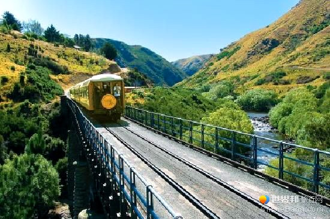

| 特卡波 | |
|
约翰山是世界闻名的四大观星圣地之一，因为地处四面环山的盆地，全年80%的时间里可以观赏到通透的星空，人们赞誉这里能看见全球最美的天幕。在约翰山顶，有一家名为“阿斯特罗”（Astro）的小咖啡厅，它有大大的落地窗，窗外是震撼人心的美景，因此被称为世界上景观最好的咖啡馆。白天在咖啡屋的落地窗旁一边喝咖啡，一边俯瞰令人窒息的山水风色，欣赏特卡波湖的青绿凝脂的色彩和亚历山大利娜湖（Lake Alexandrina）宝石蓝的灵动气质；晚上可以参加观星团，仰望静谧璀璨的星空，寻找南半球才能看到的南十字星。 |
| 卡特波湖 | |
| 建在约翰山顶的天文台是新西兰太空研究事业的重要基地，也是世界四大最佳观星胜地之一，被天文学家公认为是观察银河系及宇宙的最佳地点。天文台由坎特伯雷大学负责运营，常驻团队中包括了来自日本名古屋大学的天文学家。美国和德国也投资了该处的设施建设。你可以在天文台亲眼看到只有在南半球才能观测到的南十字星，幸运的话还能看到流星划过夜空。想在约翰山天文台观星，需要参加当地的观星团，晚上六点以后抵达这里，通过先进的天文望远镜和双筒望远镜，你将在专业导游的指导下，和美丽的星星有个浪漫约会。 |
| 但尼丁 | |
|  | 但尼丁火车站现在每天发出两班经泰伊里峡谷（Taieri Gorge）的观景火车，在普克兰吉“天堂之山”终点返回但尼丁。观景火车会经过嶙峋的山头与河流潺潺的峡谷间，游客在高高架起的铁轨与隧道上会有种触目惊心的感觉，令人难忘。 泰伊里峡谷铁路曾被誉为"世界上最精彩的旅行之一 |
| 箭镇 | |
| 箭镇因电影《指环王》而闻名，电影中剧中亚文公主在布鲁南渡口以咒语引来洪水，阻挡戒灵的场景，即是在箭镇附近的峡谷内拍摄的。箭镇是新西兰一处美丽宜居的小镇，历史上曾经是热闹的淘金地，60多处保存完好的淘金时代的建筑，大都集中在箭镇最主要街道白金汉街。漫步在这条街道上，两旁尽是百年的欧式建筑：古老的英式电话亭、19世纪的旅馆、路边停靠的老爷车，时光都好像重新回到了100多年前。深秋是这里最美的季节，如画般的街道被两旁的落叶涂上厚厚的金黄色，正适合做小镇老时光的主色调。 |
| 格林诺奇 | |
| 格林诺奇还有一个更为人知晓的名字叫“魔戒小镇”。这里之所以出名是因为新西兰大导演彼特杰克逊拍摄的《魔戒》三部曲和最新上映的《霍比特人》中的大量场景都是在此拍摄的。格林诺奇还被称为是最具有“中土世界”气质的地方，来此能体会到100%纯净的新西兰。 |
| 查看更多》》 |